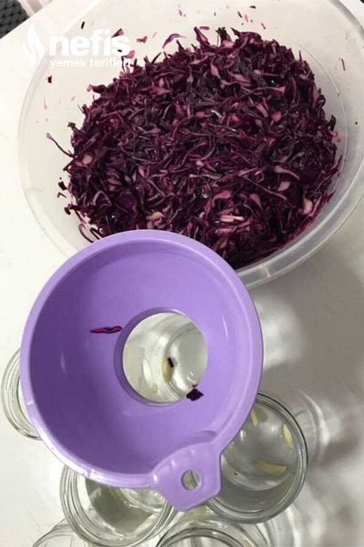

🍽️ 12-14 kişilik⏱️ Hazırlık: 20 dk🏷️ Diğer Tarifler🏷️ Turşu Tarifleri
Malzemeler
- 2 kg mor lahana
- 2 limonun suyu
- 2 kaşık kaya tuzu
- 1 çay bardağı sirke
Hazırlanışı
- Lahanaları ince ince kıyıyoruz.
- Tuzla biraz ovuyoruz.
- Limon suyu ve sirkeyi ekleyerek iyice harmanlıyoruz.
- Kavanozlara paylaştırıyoruz.
- 2-3 gün sonra yemeye başlıyoruz.Afiyet olsun 😊.
Fotoğraflar